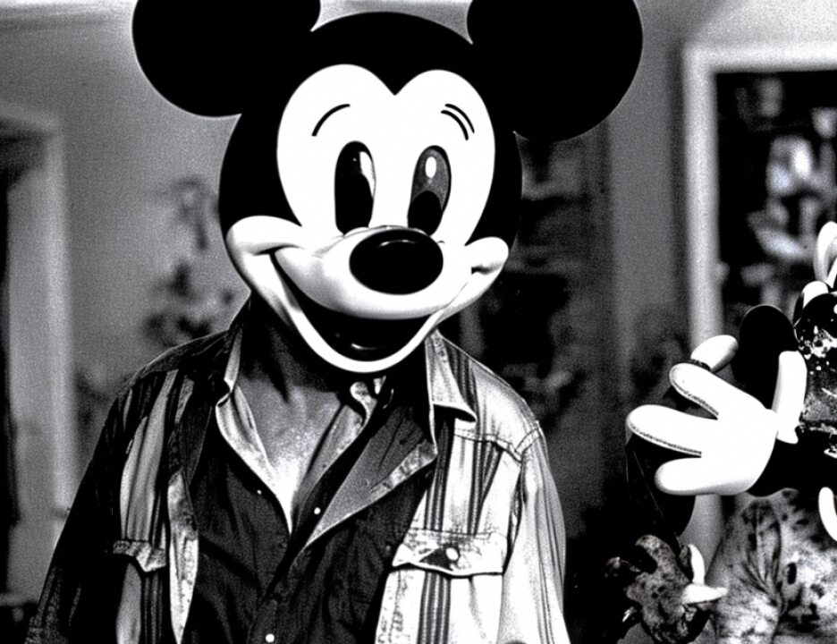

10 broken down.
11 THE COURT: We have agreed that the substance is that
12 the verdict is life imprisonment, and I don't know whether the
13 difference that you make is a public relations difference, a
14 difference with respect to the next jury phase, what --
15 MR. FITZGERALD: Two points, Judge.
16 THE COURT: Yes.
17 MR. FITZGERALD: The courts talk about an interest in
18 finality. Two things. If the jury is deadlocked, I think we
19 should have a note indicating they are deadlocked and an
20 opportunity to have an Allen charge given, trying to reach a
21 verdict in good conscience. Number one. Number two, it is
22 not good public relations for us to get a right answer. I
23 think the jury is entitled to know if it is life imprisonment,
24 but more important we need to know whether there is a
25 deadlock, which could be an intellectual question, that there
7311
1 is a problem here.
2 These three choices on the verdict form assume a
3 unanimous decision has been reached. If you cannot reach a
4 unanimous decision, you are to let us know by note and the
5 parties and the court can proceed from there. But I don't
6 think we should assume that they are deadlocked or take
7 deadlocked as being unanimously against the death penalty. I
8 think we need to qualify whatever language is used by count in
9 the unlikely event that there is a split by count.
10 (Pause)
11 THE COURT: Let me read it again: Ladies and
12 gentlemen of the jury. The charge correctly informs you, page
13 28, line 1, that if you do not unanimously find beyond a
14 reasonable doubt that the death sentence should be imposed,
15 you should indicate this in section V of the special verdict
16 form. Let me elaborate on how this is done. If the jury has
17 not unanimously found that death is the appropriate sentence,
18 then the government has failed to prove that death is
19 appropriate to your unanimous satisfaction. If this is the
20 case, then your verdict is that Al-'Owhali should be sentenced
21 to life imprisonment and you should check the first box on
22 page 15. This is because the consequence of a lack of
23 unanimity in favor of death is a verdict in favor of life
24 imprisonment. Before you reach any conclusion based on a lack
25 of unanimity in favor of a death sentence, you should continue
7312
1 your discussions until you are fully satisfied that further
2 discussion will not yield a unanimous verdict in favor of
3 death. Again, you are to consider this separately as to each
4 count listed in the special verdict form.
5 MR. COHN: I need a minute, Judge.
6 THE COURT: Yes.
7 MR. FITZGERALD: It might save time since I won't
8 need a minute to say that we object on the grounds of 3593(e).
9 It says that the jury by unanimous vote shall recommend
10 whether the defendant should be sentenced to death, to life
11 imprisonment without possibility of release, or some other
12 lesser sentence, and the latter part does not apply. A
13 deadlock is not a verdict and I think we shouldn't tell the
14 jury that it is a verdict. The jury either agrees unanimously
15 that death is appropriate, they agree unanimously that life is
16 appropriate, or they deadlock. The consequence of a deadlock
17 may be a life sentence but that is not a verdict.
18 THE COURT: When you say may be --
19 MR. FITZGERALD: The consequence is, but it is not a
20 verdict.
21 THE COURT: We are all in agreement if this jury is
22 deadlocked it is a life sentence. Shouldn't fairness indicate
23 that they know that, so that the jurors may turn to one juror
24 and say, you know, that's what is going to happen, if you
25 don't vote in favor of death, then you understand that will
7313
1 override the 11. Not it is going to go before some other
2 jury, not that the judge is going to make some independent
3 decision. We are all in agreement that that is what happens,
4 and what we are debating now is whether the jury should be
5 told that is what will happen.
6 MR. FITZGERALD: But if they are told that, assuming
7 we should tell them that, my only point is that we should tell
8 them that a failure to agree upon on a verdict is not a
9 verdict. The consequence will be that this is not presented
10 to another jury --
11 THE COURT: What is the difference between it not
12 being a verdict and something which definitively indicates to
13 the court what is to be in the judgment?
14 MR. FITZGERALD: I think it comes from Jones, where
15 it says the government, particularly in a capital proceeding,
16 has a very serious interest in the finality of having a
17 verdict, a consensus as the conscience of the community.
18 There is an interest in both sides to having 12 people be
19 unanimous one way or the other, and for a verdict to be
20 reached where 12 people say death versus life has a greater
21 effect for the process than some split which may result --
1